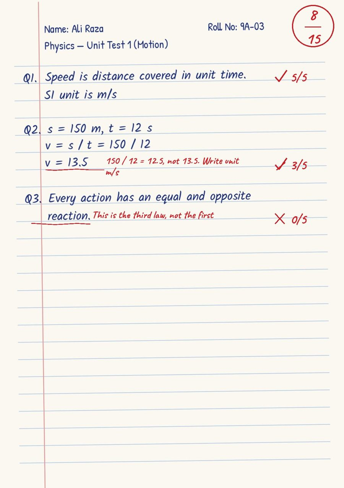

Teachers
Check a class test in an evening instead of a weekend. Your classes appear as tiles; tap a class, pick the subject, and every copy and mark is there.
Teachers photograph the answer copies. LaalPen checks them against the teacher's own answer key, marks them in red pen, and the teacher approves the final marks. Students and parents see exactly why marks were cut.
Built for Pakistani schools and academies: Classes 1–12, FBISE, Sindh and Punjab boards.
After a test, the teacher takes a photo of each page on a phone. No scanner needed, poor light is fixed automatically.
Every answer is compared with the teacher's answer key. Any correct method is accepted and maths answers are re-calculated.
The copy comes back in red pen. Answers the AI was unsure about are flagged. The teacher changes any mark and approves.
Students open their checked copy in the app. Parents get the result by email. Every cut mark has a reason next to it.

Check a class test in an evening instead of a weekend. Your classes appear as tiles; tap a class, pick the subject, and every copy and mark is there.
See your checked copy on your phone, question by question, and your progress in every subject across the year.
Get each result by email with the teacher's note, instead of waiting for the term report.
One dashboard for classes, teachers, tests and copies checked. Run more tests without adding hours to your teachers' day.
Your school gives you a short code. Your class teacher approves you, so only real students of the class get in.
No. LaalPen is the first checker. The teacher sees every mark, changes what they disagree with and approves. Nothing is shown to students before that.
English-medium answers in any subject, Classes 1–12. Maths and science work especially well because final answers are re-calculated. Urdu handwriting support is coming next.
Copies are stored for your school only and opened through short-lived private links. Only the student, their teachers and your admins can see them. They are never used to train public AI models.
Any Android phone or iPhone with a camera. Principals and admins can also manage the school from a computer.
Register your school in the app, add classes and teachers, and share your school code with students. Talk to us for a free pilot.
Har copy ka hisaab.